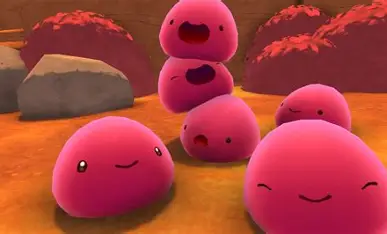
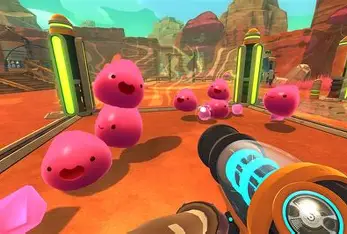
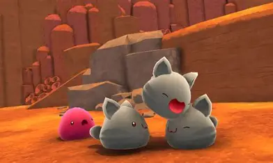
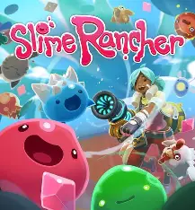
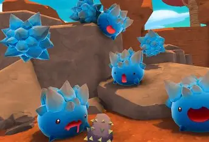

Slime Rancher es un simulador de vida en primera persona y mundo abierto desarrollado por Monomi Park. En él, controlas a Beatrix LeBeau, una joven intrépida que viaja mil años luz hasta el Extremo Lejano para criar limes, cultivar, recolectar recursos y explorar entornos salvajes. Combina gestión de granja con aventuras y salvajes. Combina gestión de granja con aventuras y

El objetivo principal del juego es construir y expandir tu propio rancho de slimes. Debes alimentar a tus criaturas con la comida que les gusta, recolectar los plorts gelatinas que producen y venderlos en el mercado para ganar dinero. Con ese dinero puedes mejorar tu equipo, ampliar tu rancho y comprar nuevas herramientas.

Existen muchos tipos de slimes en el juego, cada uno con su propia personalidad, color y preferencias alimenticias. Hay slimes rosados, tigres, de roca, de fuego, entre muchos otros. Algunos son tranquilos y fáciles de cuidar, mientras que otros pueden ser peligrosos si se mezclan entre sí o si no se alimentan correctamente.

El mundo del Extremo Lejano está lleno de zonas para explorar, desde praderas tranquilas hasta cuevas oscuras y desiertos áridos. Cada área tiene sus propios recursos, slimes salvajes y secretos por descubrir. Explorar es clave para conseguir nuevos materiales y desbloquear tecnología para mejorar el rancho.

Slime Rancher tuvo tanto éxito que Monomi Park lanzó una secuela llamada Slime Rancher 2, que expande el mundo, los slimes y las mecánicas del primer juego. Ambos títulos se caracterizan por su estilo visual colorido, su jugabilidad relajante y su enfoque en la exploración y la gestión de recursos.
